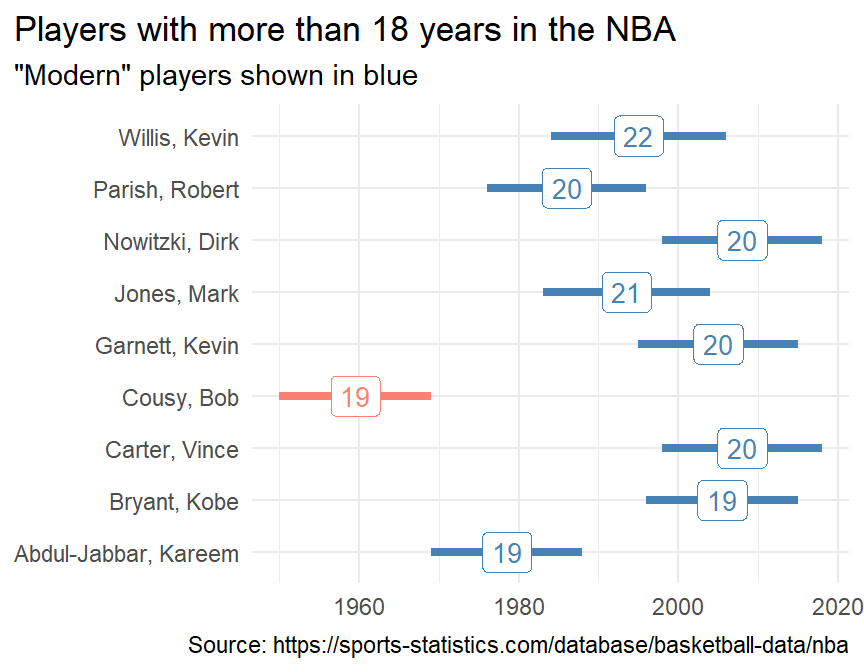

Module 6 Wrangle Columns
Previous modules were primarily focused on reading data into R and making sure the data were tidy. In this module we start wrangling data by manipulating columns, which with tidy data contain variables. Module 7 will further describe how to wrangle data through manipulating rows which contain observations. More complex wrangling topics will be discussed in subsequent modules.
Manipulating columns means you are manipulating variables.
The descriptive examples below will use the bears data frame from Section 3.3.1.
bears <- read_csv(file.path("data","Bears.csv"))
bears#R> # A tibble: 8 x 3
#R> length.cm weight.kg loc
#R> <dbl> <dbl> <chr>
#R> 1 139 110 Bayfield
#R> 2 120. 60 Bayfield
#R> 3 149 85 Bayfield
#R> 4 141 100 Ashland
#R> 5 141 95 Ashland
#R> 6 150 85 Douglas
#R> 7 130. 105 Douglas
#R> 8 150 110 Douglas
6.1 dplyr verbs
The primary tools for manipulating data frames used in this course are “verbs” from the dplyr package (which is part of the tidyverse). These functions are described in more detail in subsequent sections and modules but each function has the same following characteristics:
- The first argument is a data frame or tibble.
- Further arguments are directives explaining how to manipulate the data frame.
- Variables do not need to be given in quotes.
- A data frame or tibble is returned by the function.
Thus, these verbs are used in this general format;
new_df <- verb(old_df,...)where new_df is a new data frame created by the verb function, verb is the name of the dplyr verb function, old_df is the old original data frame, and ... will be directive arguments.
The first argument to dplyr verb functions is a data frame.
6.2 Pipe
As you will see in future modules, several dplyr verbs may be used consecutively. For example, you may use verbs to select just the females in the data frame, add a new variable that calculates body mass index, and then order the observations from lowest to highest BMI.
The “pipe” operator, %>%, allows consecutive verbs to be connected in a more efficient and readable manner. The pipe takes the data frame from in front of %>% and places it into the first argument (by default) of the function after the %>%. For example, the general format of a dplyr verb from above could be rewritten like this
new_df <- old_df %>% verb(...)because %>% will “pipe” old_df into the first argument of verb().
This may not look simpler in this case, but it allows for code like this …
new_df <- verb1(old_df,...)
new_df <- verb2(new_df,...)
new_df <- verb3(new_df,...)… to be written more efficiently and expressively like this …
new_df <- old_df %>%
verb1(...) %>%
verb2(...) %>%
verb3(...)When reading this code think of replacing %>% with “and then.” For example, the last code above could be read as “a new data frame is created by starting with an old data frame and THEN applying verb1 and THEN verb2 and THEN verb3.”
The pipe operator, %>%, places the data frame to the left of %>% in the first agument of the function after %>%.
The “pipe and assign” operator, %<>%, will also be used in this and subsequent modules. This operator takes the data frame to the left and puts it in the first argument of the function on the right AND then takes the results of the function and assigns it to the name of the data frame to the left of the pipe operator. In other words, code like
old_df <- old_df %>% verb()can be replaced with
old_df %<>% verb()The pipe-and-assign operator, %<>%, places the data frame to the left of %<>% in the first agument of the function after %<>% and then assigns the result back to the name to the left of %<>%.
Be careful with %<>% because the “old” data frame will be replaced with the result of the verb function.
These pipe operators will be used hereafter, even for single lines of code so that you become more familiar with their use for more involved future examples.
6.3 Selecting Variables
Recall from Section 2.3 that an individual variable (i.e., column) can be selected from a data frame by separating the data frame name and the variable name with a $. For example, the following selects loc from bears.
bears$loc#R> [1] "Bayfield" "Bayfield" "Bayfield" "Ashland" "Ashland" "Douglas" "Douglas"
#R> [8] "Douglas"However, in this section, interest is in selecting multiple variables, rather than a single variable, from a data frame to form a new data frame.
Variables are selected from a data frame with select(). The directive arguments to select() indicate which variables to retain. Multiple methods may be used to select the same variable(s) (Table 6.1) but you may find that some ways make your code more succinct and readable.
| Selector | Column/Variables Returned |
|---|---|
2
|
2nd column |
c(2,3)
|
2nd & 3rd columns |
2:5
|
All columns between 2nd and 5th columns |
-2
|
All but the 2nd column |
x
|
Column named x
|
c(x,y)
|
Columns named x and y
|
x:z
|
All columns between columns named x and z
|
-x
|
All but the column named x
|
starts_with("x")
|
All columns with names that start with x |
starts_with(c("x","y"))
|
All columns with names that start with x or y |
ends_with("x")
|
All columns with names that end with x |
contains("x")
|
All columns with names that contain an x |
any_of(c("x","y"))
|
Any (or all) of the columns named x or y (exactly) |
all_of(c("x","y"))
|
All columns named x or y (exactly)22 |
last_col()
|
Last column |
everything()
|
All columns |
Below are examples of selecting variables from bears.23 Note that each resulting data frame is called tmp (for temporary) because it will not be used further here. If the data frames were to be used further than it would be best to assign them to an informative name.
- Select first two variables.
tmp <- bears %>% select(1:2)
tmp#R> # A tibble: 8 x 2
#R> length.cm weight.kg
#R> <dbl> <dbl>
#R> 1 139 110
#R> 2 120. 60
#R> 3 149 85
#R> 4 141 100
#R> 5 141 95
#R> 6 150 85
#R> 7 130. 105
#R> 8 150 110- Select the
locandlength.cmvariables.
tmp <- bears %>% select(c(loc,length.cm))
tmp#R> # A tibble: 8 x 2
#R> loc length.cm
#R> <chr> <dbl>
#R> 1 Bayfield 139
#R> 2 Bayfield 120.
#R> 3 Bayfield 149
#R> 4 Ashland 141
#R> 5 Ashland 141
#R> 6 Douglas 150
#R> 7 Douglas 130.
#R> 8 Douglas 150- Select all variables that contain a “.”
tmp <- bears %>% select(contains("."))
tmp#R> # A tibble: 8 x 2
#R> length.cm weight.kg
#R> <dbl> <dbl>
#R> 1 139 110
#R> 2 120. 60
#R> 3 149 85
#R> 4 141 100
#R> 5 141 95
#R> 6 150 85
#R> 7 130. 105
#R> 8 150 110- Select all variables that start with an “l.”
tmp <- bears %>% select(starts_with("l"))
tmp#R> # A tibble: 8 x 2
#R> length.cm loc
#R> <dbl> <chr>
#R> 1 139 Bayfield
#R> 2 120. Bayfield
#R> 3 149 Bayfield
#R> 4 141 Ashland
#R> 5 141 Ashland
#R> 6 150 Douglas
#R> 7 130. Douglas
#R> 8 150 Douglas- Select all variables except
loc.
tmp <- bears %>% select(-loc)
tmp#R> # A tibble: 8 x 2
#R> length.cm weight.kg
#R> <dbl> <dbl>
#R> 1 139 110
#R> 2 120. 60
#R> 3 149 85
#R> 4 141 100
#R> 5 141 95
#R> 6 150 85
#R> 7 130. 105
#R> 8 150 110Variables of interest are often selected (or variables not of interest are excluded) to make a smaller data frame that is simply easier to work with. You do not have to restrict a data frame just to variables of interest.
6.4 Moving Variables
Variables can be moved within a data frame with relocate(). By default the selected columns are moved to the beginning of the data frame. However, they can be placed before or after a particular column by using .before= and .after=. Note that columns to be moved can be selected with methods shown in Table 6.1. Below are examples of moving variables within bears.
- Move
locto the beginning.
tmp <- bears %>% relocate(loc)
tmp#R> # A tibble: 8 x 3
#R> loc length.cm weight.kg
#R> <chr> <dbl> <dbl>
#R> 1 Bayfield 139 110
#R> 2 Bayfield 120. 60
#R> 3 Bayfield 149 85
#R> 4 Ashland 141 100
#R> 5 Ashland 141 95
#R> 6 Douglas 150 85
#R> 7 Douglas 130. 105
#R> 8 Douglas 150 110- Move
locto afterlength.cm.
tmp <- bears %>% relocate(loc,.after=length.cm)
tmp#R> # A tibble: 8 x 3
#R> length.cm loc weight.kg
#R> <dbl> <chr> <dbl>
#R> 1 139 Bayfield 110
#R> 2 120. Bayfield 60
#R> 3 149 Bayfield 85
#R> 4 141 Ashland 100
#R> 5 141 Ashland 95
#R> 6 150 Douglas 85
#R> 7 130. Douglas 105
#R> 8 150 Douglas 110- Move
locto beforeweight.kg.
tmp <- bears %>% relocate(loc,.before=weight.kg)
tmp#R> # A tibble: 8 x 3
#R> length.cm loc weight.kg
#R> <dbl> <chr> <dbl>
#R> 1 139 Bayfield 110
#R> 2 120. Bayfield 60
#R> 3 149 Bayfield 85
#R> 4 141 Ashland 100
#R> 5 141 Ashland 95
#R> 6 150 Douglas 85
#R> 7 130. Douglas 105
#R> 8 150 Douglas 110- Move
length.cmto the end.
tmp <- bears %>% relocate(length.cm,.after=last_col())
tmp#R> # A tibble: 8 x 3
#R> weight.kg loc length.cm
#R> <dbl> <chr> <dbl>
#R> 1 110 Bayfield 139
#R> 2 60 Bayfield 120.
#R> 3 85 Bayfield 149
#R> 4 100 Ashland 141
#R> 5 95 Ashland 141
#R> 6 85 Douglas 150
#R> 7 105 Douglas 130.
#R> 8 110 Douglas 150- Move both
length.cmandweight.kgto the beginning.
tmp <- bears %>% relocate(contains("."))
tmp#R> # A tibble: 8 x 3
#R> length.cm weight.kg loc
#R> <dbl> <dbl> <chr>
#R> 1 139 110 Bayfield
#R> 2 120. 60 Bayfield
#R> 3 149 85 Bayfield
#R> 4 141 100 Ashland
#R> 5 141 95 Ashland
#R> 6 150 85 Douglas
#R> 7 130. 105 Douglas
#R> 8 150 110 DouglasIt is not necessary that variables be in a particular order in a data frame; however, you may find it easier to work with variables in a particular order.
6.5 Renaming Variables
Variables may be given new names with rename(). Each directive argument in rename() has the form newname=oldname where newname will be the new name for the oldname variable in the data frame. Below are examples of renaming variables in bears.
- Rename
loctoLocation.
tmp <- bears %>% rename(Location=loc)
tmp#R> # A tibble: 8 x 3
#R> length.cm weight.kg Location
#R> <dbl> <dbl> <chr>
#R> 1 139 110 Bayfield
#R> 2 120. 60 Bayfield
#R> 3 149 85 Bayfield
#R> 4 141 100 Ashland
#R> 5 141 95 Ashland
#R> 6 150 85 Douglas
#R> 7 130. 105 Douglas
#R> 8 150 110 Douglas- Rename both
length.cmandweight.kg.
tmp <- bears %>% rename(Length=length.cm,Weight=weight.kg)
tmp#R> # A tibble: 8 x 3
#R> Length Weight loc
#R> <dbl> <dbl> <chr>
#R> 1 139 110 Bayfield
#R> 2 120. 60 Bayfield
#R> 3 149 85 Bayfield
#R> 4 141 100 Ashland
#R> 5 141 95 Ashland
#R> 6 150 85 Douglas
#R> 7 130. 105 Douglas
#R> 8 150 110 DouglasNon-standard names of variables must be included in “backticks” when renaming them. For example, suppose that the names of variables in bears2 looked like this (note spaces in the names of the first two variables).
bears2#R> # A tibble: 8 x 3
#R> `length (cm)` `weight (kg)` loc
#R> <dbl> <dbl> <chr>
#R> 1 139 110 Bayfield
#R> 2 120. 60 Bayfield
#R> 3 149 85 Bayfield
#R> 4 141 100 Ashland
#R> 5 141 95 Ashland
#R> 6 150 85 Douglas
#R> 7 130. 105 Douglas
#R> 8 150 110 DouglasThe following code is used to sensibly rename these variables with non-standard names.
tmp <- bears2 %>% rename(Length=`length (cm)`,Weight=`weight (kg)`)
tmp#R> # A tibble: 8 x 3
#R> Length Weight loc
#R> <dbl> <dbl> <chr>
#R> 1 139 110 Bayfield
#R> 2 120. 60 Bayfield
#R> 3 149 85 Bayfield
#R> 4 141 100 Ashland
#R> 5 141 95 Ashland
#R> 6 150 85 Douglas
#R> 7 130. 105 Douglas
#R> 8 150 110 DouglasNon-standard names of variables must be included in “backticks” when renaming them.
6.6 Adding Variables
New variables are added to a data frame with mutate(). The directive arguments to this function have the form newvar=XXX where newvar will be the name of the new variable and XXX will create a new variable. There are a wide variety of expressions and functions that can be used to construct a new variable. A few of these will be illustrated below with bears but it is impossible to demonstrate all possibilities. Thus, other examples will be shown in the full context examples below as well as in subsequent modules.
- Add a
yearvariable that is a constant value.
tmp <- bears %>% mutate(year=2021)
tmp#R> # A tibble: 8 x 4
#R> length.cm weight.kg loc year
#R> <dbl> <dbl> <chr> <dbl>
#R> 1 139 110 Bayfield 2021
#R> 2 120. 60 Bayfield 2021
#R> 3 149 85 Bayfield 2021
#R> 4 141 100 Ashland 2021
#R> 5 141 95 Ashland 2021
#R> 6 150 85 Douglas 2021
#R> 7 130. 105 Douglas 2021
#R> 8 150 110 Douglas 2021- Add a length in inches variable derived from
length.cm.
tmp <- bears %>% mutate(length.in=length.cm/2.54)
tmp#R> # A tibble: 8 x 4
#R> length.cm weight.kg loc length.in
#R> <dbl> <dbl> <chr> <dbl>
#R> 1 139 110 Bayfield 54.7
#R> 2 120. 60 Bayfield 47.4
#R> 3 149 85 Bayfield 58.7
#R> 4 141 100 Ashland 55.5
#R> 5 141 95 Ashland 55.5
#R> 6 150 85 Douglas 59.1
#R> 7 130. 105 Douglas 51.0
#R> 8 150 110 Douglas 59.1Multiple variables can be created at one time by including more arguments to mutate(). Subsequent arguments in mutate() may use variables created previously in the same mutate(). For example, the code below adds new variables that represent the weight of the bear if it were “healthy” (based on its length), the difference between the observed weight and this “healthy” weight, and a note if the bear is more or less than the healthy weight.
tmp <- bears %>% mutate(healthy.wt=0.1129*length.cm^1.366,
rel_weight=weight.kg-healthy.wt,
rel_health=ifelse(rel_weight>0,"more","less"))
tmp#R> # A tibble: 8 x 6
#R> length.cm weight.kg loc healthy.wt rel_weight rel_health
#R> <dbl> <dbl> <chr> <dbl> <dbl> <chr>
#R> 1 139 110 Bayfield 95.5 14.5 more
#R> 2 120. 60 Bayfield 78.6 -18.6 less
#R> 3 149 85 Bayfield 105. -20.0 less
#R> 4 141 100 Ashland 97.4 2.61 more
#R> 5 141 95 Ashland 97.4 -2.39 less
#R> 6 150 85 Douglas 106. -21.0 less
#R> 7 130. 105 Douglas 86.7 18.3 more
#R> 8 150 110 Douglas 106. 4.02 moreIn the above example ifelse() was used to create the new variable that stated whether the bear was more or less healthy based on the rel_weight variable. The ifelse() functions contains three arguments – a conditioning expression that evaluates to either TRUE or FALSE, an item to return if the expression evaluates to TRUE, and an item to return if the expression evaluates to FALSE. This ifelse() statement can be read as “if the relative weight is greater than 0 then return ‘more’ otherwise return ‘less.’”
The ifelse() function is quite powerful for converting values to binary groups. However, case_when() is more flexible when more groups will be created. The case_when() function consists of several arguments of the form condition ~ return where condition is a condition expression that evaluates to TRUE or FALSE, and return is the item that will be returned if that condition expression evaluates to TRUE. The conditions in the arguments are sequential such that the result for the first condition that evaluates to TRUE is returned. The last condition expression in case_when() should be TRUE which will always evaluate to TRUE and will thus return its value if all previous conditions were not met.
For example, the code below is used to create a variable that provides a more detailed description of the relative health of the bears. This code could be read as “I the relative weight is greater than 10 then return ‘much more,’ otherwise if it is greater than 0 then return ‘some more,’ otherwise if it is greater than -10 then return ‘some less,’ otherwise (i.e., value must be less than -10) return ‘much less.’”
tmp <- bears %>% mutate(healthy.wt=0.1129*length.cm^1.366,
rel_weight=weight.kg-healthy.wt,
rel_health=case_when(
rel_weight>10 ~ "much more",
rel_weight>0 ~ "some more",
rel_weight>-10 ~ "some less",
TRUE ~ "much less"
))
tmp#R> # A tibble: 8 x 6
#R> length.cm weight.kg loc healthy.wt rel_weight rel_health
#R> <dbl> <dbl> <chr> <dbl> <dbl> <chr>
#R> 1 139 110 Bayfield 95.5 14.5 much more
#R> 2 120. 60 Bayfield 78.6 -18.6 much less
#R> 3 149 85 Bayfield 105. -20.0 much less
#R> 4 141 100 Ashland 97.4 2.61 some more
#R> 5 141 95 Ashland 97.4 -2.39 some less
#R> 6 150 85 Douglas 106. -21.0 much less
#R> 7 130. 105 Douglas 86.7 18.3 much more
#R> 8 150 110 Douglas 106. 4.02 some moreFinally, mapvalues() from plyr can be used to efficiently convert the groups of a categorical variable to different groups in a new categorical variables. The arguments to mapvalues() are the name of the first categorical variable followed by the names of the groups of this variable in from= and the new names for the groups in the new variable in to=. Note that all group names not listed in from= will simply carry-over as-is in the new variable. The plyr package is not part of tidyverse and we will not typically use any other functions from plyr; thus, when using mapvalues() you should precede it with plyr:: as demonstrated below.
As an example suppose that the locations in loc need to be converted to abbreviations to save space when graphing.
tmp <- bears %>%
mutate(loc_abb=plyr::mapvalues(loc,
from=c("Ashland","Bayfield","Douglas"),
to=c("ASH","BAY","DOU")))
tmp#R> # A tibble: 8 x 4
#R> length.cm weight.kg loc loc_abb
#R> <dbl> <dbl> <chr> <chr>
#R> 1 139 110 Bayfield BAY
#R> 2 120. 60 Bayfield BAY
#R> 3 149 85 Bayfield BAY
#R> 4 141 100 Ashland ASH
#R> 5 141 95 Ashland ASH
#R> 6 150 85 Douglas DOU
#R> 7 130. 105 Douglas DOU
#R> 8 150 110 Douglas DOUAlternatively suppose that Ashland and Bayfield need to be combined into one group for some reason. This can be accomplished by giving the combined name for counties in the positions of to= that match the two counties in from=.
tmp <- bears %>%
mutate(loc_abb=plyr::mapvalues(loc,
from=c("Ashland","Bayfield"),
to=c("Ashland/Bayfield","Ashland/Bayfield")))
tmp#R> # A tibble: 8 x 4
#R> length.cm weight.kg loc loc_abb
#R> <dbl> <dbl> <chr> <chr>
#R> 1 139 110 Bayfield Ashland/Bayfield
#R> 2 120. 60 Bayfield Ashland/Bayfield
#R> 3 149 85 Bayfield Ashland/Bayfield
#R> 4 141 100 Ashland Ashland/Bayfield
#R> 5 141 95 Ashland Ashland/Bayfield
#R> 6 150 85 Douglas Douglas
#R> 7 130. 105 Douglas Douglas
#R> 8 150 110 Douglas DouglasNote in the code above that I did not include “Douglas” in either from= or to= because it was not to be modified for this situation.
6.7 Examples in Context
6.7.1 NBA Players
Data on every player who has ever played in the National Basketball Association was read into R in Section 3.3.1, and below along with its structure.
players <- read_csv("https://sports-statistics.com/database/basketball-data/nba/NBA-playerlist.csv")
str(players,give.attr=FALSE)#R> spec_tbl_df [4,393 x 15] (S3: spec_tbl_df/tbl_df/tbl/data.frame)
#R> $ ...1 : num [1:4393] 0 1 2 3 4 5 6 7 8 9 ...
#R> $ DISPLAY_FIRST_LAST : chr [1:4393] "Alaa Abdelnaby" "Zaid Abdul-Aziz" "Kareem Abdul-Jabbar" "Mahmoud Abdul-Rauf" ...
#R> $ DISPLAY_LAST_COMMA_FIRST : chr [1:4393] "Abdelnaby, Alaa" "Abdul-Aziz, Zaid" "Abdul-Jabbar, Kareem" "Abdul-Rauf, Mahmoud" ...
#R> $ FROM_YEAR : num [1:4393] 1990 1968 1969 1990 1997 ...
#R> $ GAMES_PLAYED_FLAG : chr [1:4393] "Y" "Y" "Y" "Y" ...
#R> $ OTHERLEAGUE_EXPERIENCE_CH: chr [1:4393] "00" "00" "00" "00" ...
#R> $ PERSON_ID : num [1:4393] 76001 76002 76003 51 1505 ...
#R> $ PLAYERCODE : chr [1:4393] "HISTADD_alaa_abdelnaby" "HISTADD_zaid_abdul-aziz" "HISTADD_kareem_abdul-jabbar" "mahmoud_abdul-rauf" ...
#R> $ ROSTERSTATUS : num [1:4393] 0 0 0 0 0 0 0 0 0 0 ...
#R> $ TEAM_ABBREVIATION : chr [1:4393] NA NA NA NA ...
#R> $ TEAM_CITY : chr [1:4393] NA NA NA NA ...
#R> $ TEAM_CODE : chr [1:4393] NA NA NA NA ...
#R> $ TEAM_ID : num [1:4393] 0 0 0 0 0 0 0 0 0 0 ...
#R> $ TEAM_NAME : chr [1:4393] NA NA NA NA ...
#R> $ TO_YEAR : num [1:4393] 1994 1977 1988 2000 2003 ...
Suppose that we ultimately want to make a graph related to the length of time that players were in the NBA. To facilitate this, I am going to
- reduce this data frame to only the players name, the year they started, and the year they ended in the NBA;
- rename long variable names (and remove the capitalization);
- calculate the amount of time they were in the NBA by subtracting their start year from their end year;
- create a new variable called “modern” that is “yes” for players that ended their careers in 1980 or later and is “no” otherwise; and
- order the data from most to least years played.24
players2 <- players %>%
select(DISPLAY_LAST_COMMA_FIRST,FROM_YEAR,TO_YEAR) %>%
rename(name=DISPLAY_LAST_COMMA_FIRST,start=FROM_YEAR,end=TO_YEAR) %>%
mutate(years_played=end-start,
modern=ifelse(end>=1980,"yes","no")) %>%
arrange(desc(years_played))
players2#R> # A tibble: 4,393 x 5
#R> name start end years_played modern
#R> <chr> <dbl> <dbl> <dbl> <chr>
#R> 1 Willis, Kevin 1984 2006 22 yes
#R> 2 Jones, Mark 1983 2004 21 yes
#R> 3 Carter, Vince 1998 2018 20 yes
#R> 4 Garnett, Kevin 1995 2015 20 yes
#R> 5 Nowitzki, Dirk 1998 2018 20 yes
#R> 6 Parish, Robert 1976 1996 20 yes
#R> 7 Abdul-Jabbar, Kareem 1969 1988 19 yes
#R> 8 Bryant, Kobe 1996 2015 19 yes
#R> 9 Cousy, Bob 1950 1969 19 no
#R> 10 Crawford, Jamal 2000 2018 18 yes
#R> # ... with 4,383 more rows
For fun, this is what one plot of the results might look like.

6.7.2 Wolves and Moose of Isle Royale
For a module in my “Great Graphs” course I wanted to demonstrate to students how to create graphs that examined the abundance of Moose and Wolves on Isle Royale over time and in relation to winter temperatures and whether an ice bridge formed between the mainland and Isle Royale. Fortunately, these data25 are available at Wolves & Moose of Isle Royale. I downloaded the data file provided there and read it into R below,26 where I also examined the structure of the data frame.
irmw <- readxl::read_excel(file.path("data","Data_wolves_moose_Isle_Royale_June2019.xlsx"),
sheet="1. population level data",skip=1,na=c("NA","N/A"))
str(irmw,give.attr=FALSE)#R> tibble [61 x 33] (S3: tbl_df/tbl/data.frame)
#R> $ year : num [1:61] 1959 1960 1961 1962 1963 ...
#R> $ wolves : num [1:61] 20 22 22 23 20 26 28 26 22 22 ...
#R> $ moose : num [1:61] 538 564 572 579 596 ...
#R> $ kill rate : chr [1:61] NA NA NA NA ...
#R> $ predation rate : chr [1:61] NA NA NA NA ...
#R> $ f (wolves) : chr [1:61] NA NA NA NA ...
#R> $ ancestry (immigrant wolf) : num [1:61] NA NA NA NA NA NA NA NA NA NA ...
#R> $ Juvenile Survival : chr [1:61] NA NA NA NA ...
#R> $ Adult Survival : chr [1:61] NA NA NA NA ...
#R> $ overall survival (genetic-CR) : chr [1:61] NA NA NA NA ...
#R> $ overall survival (field-based estimate) : num [1:61] NA NA NA NA NA NA NA NA NA NA ...
#R> $ % mortality, obsolete : num [1:61] NA NA NA NA NA NA NA NA NA NA ...
#R> $ %recruitment, obsolete : num [1:61] NA NA NA NA NA NA NA NA NA NA ...
#R> $ recruitment rate, moose (aerial surveys) : chr [1:61] "20" "14.3" "19.5" "16.5" ...
#R> $ mean age (excluding calves) : chr [1:61] "5.8211920529999999" "6.1446540880000002" "6.266666667" "6.1117647059999998" ...
#R> $ proportion of moose population that are senescent: chr [1:61] "6" "6" "7" "7" ...
#R> $ UN:C -west : num [1:61] NA NA NA NA NA NA NA NA NA NA ...
#R> $ UN:C - east : num [1:61] NA NA NA NA NA NA NA NA NA NA ...
#R> $ GA:C - west : chr [1:61] NA NA NA NA ...
#R> $ GA:C - east : chr [1:61] NA NA NA NA ...
#R> $ proportion of diet that is fir : num [1:61] NA NA NA NA NA NA NA NA NA NA ...
#R> $ proportion of diet that is cedar : num [1:61] NA NA NA NA NA NA NA NA NA NA ...
#R> $ proportion of diet that is deciduous : num [1:61] NA NA NA NA NA NA NA NA NA NA ...
#R> $ ticks (mean hair loss) : chr [1:61] NA NA NA NA ...
#R> $ July-Sept (temp, F) : chr [1:61] "61.2" "60.667000000000002" "60.966999999999999" "57.9" ...
#R> $ Apr-May (temp, F) : num [1:61] 43.9 43.4 41.4 42.6 43.5 ...
#R> $ Jan-Feb (temp, F) : num [1:61] 1.4 8.45 9.75 2.15 -0.35 12.4 1.25 1.7 2.75 5.85 ...
#R> $ May-Aug (precip, inches) : chr [1:61] "16.8" "12.08" "8.94" "16.010000000000002" ...
#R> $ NAO (DJFM - station based) : chr [1:61] "-0.37" "-1.54" "1.8" "-2.38" ...
#R> $ NAO - annual : chr [1:61] "1.83" "-1.88" "0.47" "-1.05" ...
#R> $ snow.depth (cm) : chr [1:61] NA NA NA NA ...
#R> $ ice bridges (0=none, 1 = present) : num [1:61] 0 0 1 1 1 0 1 1 1 1 ...
#R> $ springtime growing degree days : chr [1:61] "N/A yet" "N/A yet" "N/A yet" "N/A yet" ...The structure of this file shows that there are many variables, most of which I was not interested in for this demonstration, and the variable names are non-standard (i.e., they contain spaces). Thus, to prepare the data for the graphing course, I wanted to ..
- reduce the data frame to only the variables that I was interested in,
- rename the variables to be shorter and in standard format,
- change the “coding” of the variable about ice bridges from using 0 and 1 to using the more descriptive and easier to remember “no” and “yes,”
- create an “era” variable that says “early” for years before 1975, “middle” for years between 1975 and 2000, and “recent” for years after 2000,
- move the “era” variable to be next to the year variable (for aesthetic reasons), and
- make sure the data are ordered from earliest to latest year.
irmw2 <- irmw %>%
select(year,wolves,moose,`Jan-Feb (temp, F)`,`ice bridges (0=none, 1 = present)`) %>%
rename(winter_temp=`Jan-Feb (temp, F)`,
ice_bridges=`ice bridges (0=none, 1 = present)`) %>%
mutate(ice_bridges=plyr::mapvalues(ice_bridges,from=c(0,1),to=c("no","yes")),
era=case_when(
year<1975 ~ "early",
year<=2000 ~ "middle",
TRUE ~ "recent"
)) %>%
relocate(era,.after=year) %>%
arrange(year)
irmw2#R> # A tibble: 61 x 6
#R> year era wolves moose winter_temp ice_bridges
#R> <dbl> <chr> <dbl> <dbl> <dbl> <chr>
#R> 1 1959 early 20 538. 1.4 no
#R> 2 1960 early 22 564. 8.45 no
#R> 3 1961 early 22 572. 9.75 yes
#R> 4 1962 early 23 579. 2.15 yes
#R> 5 1963 early 20 596. -0.35 yes
#R> 6 1964 early 26 620. 12.4 no
#R> 7 1965 early 28 634. 1.25 yes
#R> 8 1966 early 26 661. 1.7 yes
#R> 9 1967 early 22 766. 2.75 yes
#R> 10 1968 early 22 848. 5.85 yes
#R> # ... with 51 more rowsIf all columns do not exist in the data frame then an error will occur.↩︎
These selections are likely not needed because
bearsis so small; however, they are used here to demonstrate the selection techniques.↩︎You will learn this in the next module.↩︎
Along with a wide variety of other data about Wolves and Moose on Isle Royale.↩︎
You may want to review the purpose of some of these arguments to
read_excel()in Section 3.3.2.↩︎